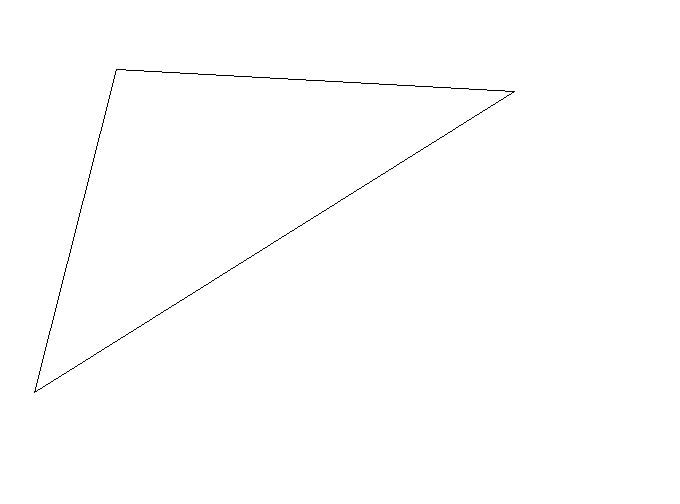

| 1. | The figure below is an irregular triangle. | |
| (a) | Measure the 3 internal angles with a protractor and add them up. | |
| (b) | Challenge Problem: Determine the sum of the interior angles of a triangle using knowledge about the properties of triangles, and verify your measurements. (Hints at: www.mathopenref.com/triangleinternalangles.html) |
